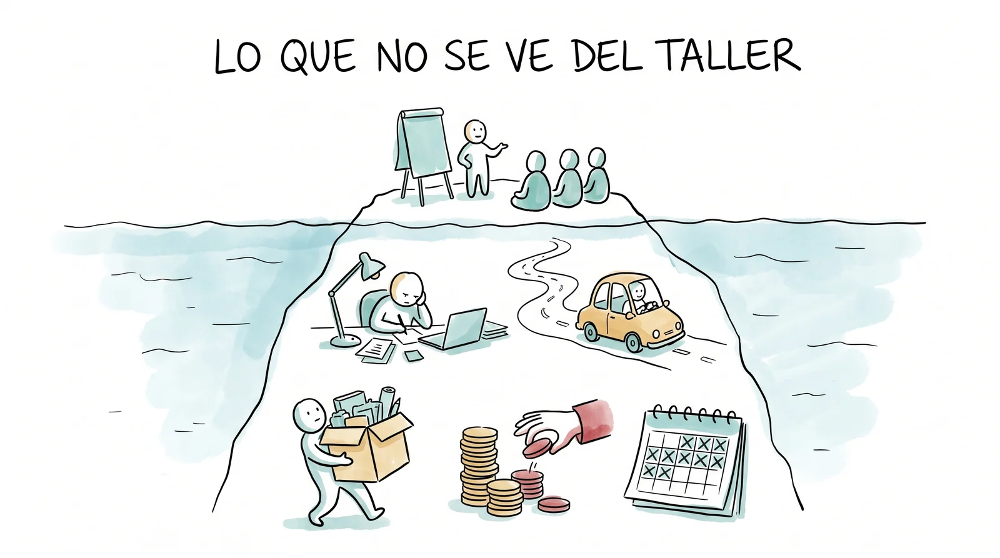
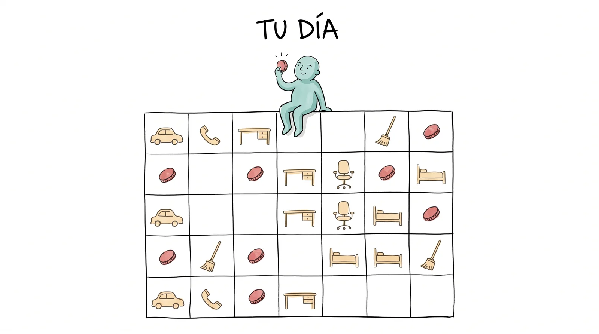

Un mazo corto para la tercera parte de la clase: cómo se cobra una capacitación. Se proyecta con Presentar; la tecla N muestra las notas del conductor. La práctica es una cotización de verdad, con calculadora.
Cobrar es un oficio
Un día les van a pedir un taller. Que sepan qué cobrar, qué incluir y cómo se ve una cotización que no da pena.
¿Cuánto vale tu día?
Cobrar una capacitación sin regalarse y sin pasarse.
Viven en Jalpan. Les piden un taller de tres días sobre bioinsumos en Huejutla. ¿Cuánto cobran?
Casi todos dicen un número redondo y chiquito: "unos mil quinientos". Es el número de las horas frente al grupo. Lo que falta es todo lo demás: prepararlo, llegar, dormir allá, los materiales, el informe, los impuestos y los días que no vas a poder trabajar en otra cosa.
Anotar tres o cuatro números del grupo en el pizarrón. Al final de la práctica se comparan con la cotización completa; la diferencia es la lección.

Lo que no se ve del taller.
El error
Cobrar solo las horas frente al grupo.
Un taller de tres días son tres días de facilitar y, además, dos o tres de preparar, uno de ir y uno de volver, medio de escribir el informe, y la gasolina, las comidas, las noches de hotel y las copias. Quien cobra solo los tres días del frente paga de su bolsa los otros seis.

Tu día: el mes tiene treinta días, pero se cobran como doce.
1 Tu tarifa diaria
Nadie que trabaja por su cuenta cobra los veintidós días hábiles del mes: la mitad se va en buscar el siguiente trabajo, cotizar, administrar, aprender y descansar. Si necesitas dieciocho mil pesos al mes y puedes cobrar doce días, tu día vale mil quinientos. Ese número es la base; a partir de él se cuenta todo lo demás.
Preguntar cuánto gana al mes un técnico de campo con empleo y recordar que a esa persona le pagan además seguro, aguinaldo, vacaciones y equipo. Quien trabaja por su cuenta se los paga solo, y por eso su día parece caro y no lo es.
2 Los días que cobras
| Día | Cuántos | Por qué cuenta |
|---|---|---|
| Preparar | Uno por cada día de taller; más la primera vez | Diseñar la carta descriptiva, armar materiales, ensayar. |
| Facilitar | Los del taller | Los únicos que todos cobran. |
| Viajar | Ida y vuelta | Un día en la carretera es un día que no se trabaja en otra cosa. |
| Informar | Medio o uno | Lista de asistencia, fotos, memoria, factura: el cliente lo pide después. |
Se multiplica por las personas que van: dos facilitadores son dos días por cada día.
3 Viáticos y traslado
Jalpan a Huejutla son unos doscientos kilómetros por Xilitla y Tamazunchale; a Aquismón, unos ciento treinta. Nadie regala cuatrocientos kilómetros de coche.
4 Materiales e imponderables
Los insumos del taller van con renglón propio, y el 5 por ciento de imponderables también.
Lo que el grupo consume (los costales, la melaza, los microorganismos, las copias, los plumones) se lista y se cotiza como cualquier partida. Y los imponderables son los mismos de siempre: la llanta ponchada, el hotel que subió, el día extra que el cliente pidió al final.
5 Los impuestos
El precio que das es sin IVA. Lo que te depositan es menos de lo que facturas.
Si cobras con factura, al total se le suma el 16 por ciento de IVA, que no es tuyo: se lo das al SAT. Y si quien te paga es una institución o una empresa, te retiene una parte (del ISR y del IVA) y la entera a tu nombre. Dos consecuencias: cotiza siempre "más IVA", y no cuentes con que el depósito sea igual al total de la cotización. El régimen en el que estés dado de alta cambia los porcentajes; la calculadora de la práctica trae los más comunes.
No profundizar en regímenes: la lección es que el precio sin impuestos y el dinero que llega son dos números distintos, y que quien no lo sabe cobra de menos sin darse cuenta.
La cotización en una hoja
| Parte | Qué lleva |
|---|---|
| Para quién y para qué | Quién pide, qué taller, dónde, qué días, cuántas personas. |
| Conceptos | Honorarios, viáticos, traslado, materiales, imponderables: cada uno con unidad, cantidad y precio unitario. |
| Subtotal, IVA y total | Los tres números, en ese orden. |
| Qué incluye y qué no | Incluye la memoria; no incluye el espacio ni la comida de los participantes. |
| Condiciones | Vigencia de treinta días, anticipo del cincuenta por ciento, qué pasa si se cancela. |
La prueba de la cotización: quien la recibe puede decir sí o no sin llamarte a preguntar.
Así se ve uno hecho: el taller que salió a pagar
Los números de la derecha son los que trae cargados la calculadora: se cambian por los suyos. El PROCODES paga hasta $45,000 por un curso de 20 horas, así que el orden de magnitud no es un exceso: es el precio de un taller bien hecho.
Dos talleres, una cotización: Huejutla del 14 al 16 de noviembre y Aquismón del 2 al 4 de diciembre.
Abran la calculadora de la cotización. Primero calculan su día; luego los días, los viáticos, el traslado, los materiales y los imponderables de cada taller; la hoja saca el subtotal, el IVA, las retenciones y lo que les depositarían. Al final se compara con el número que dijeron al principio.
Abrir la calculadora ▸Al cierre, dos o tres parejas leen su total y su "lo que me depositan". Preguntar: ¿qué renglón les sorprendió? Casi siempre son los días de preparación y el coche.